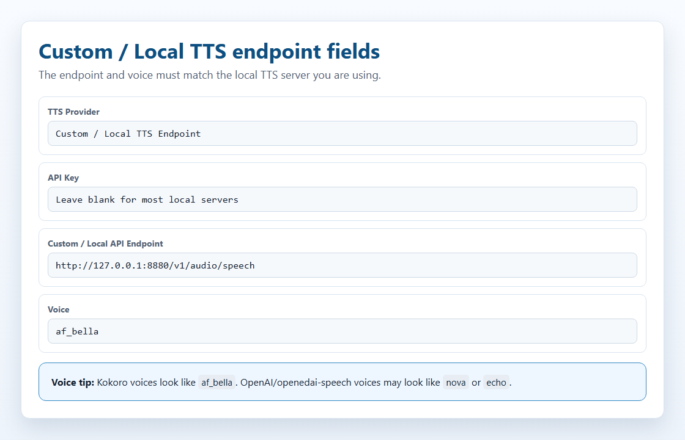
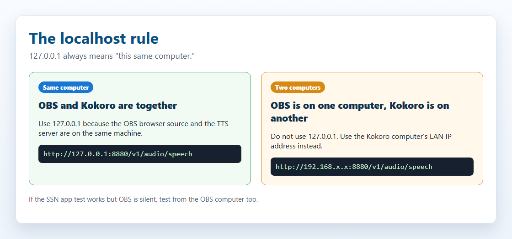
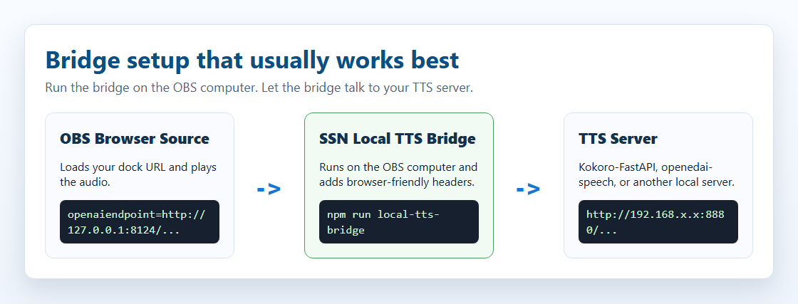
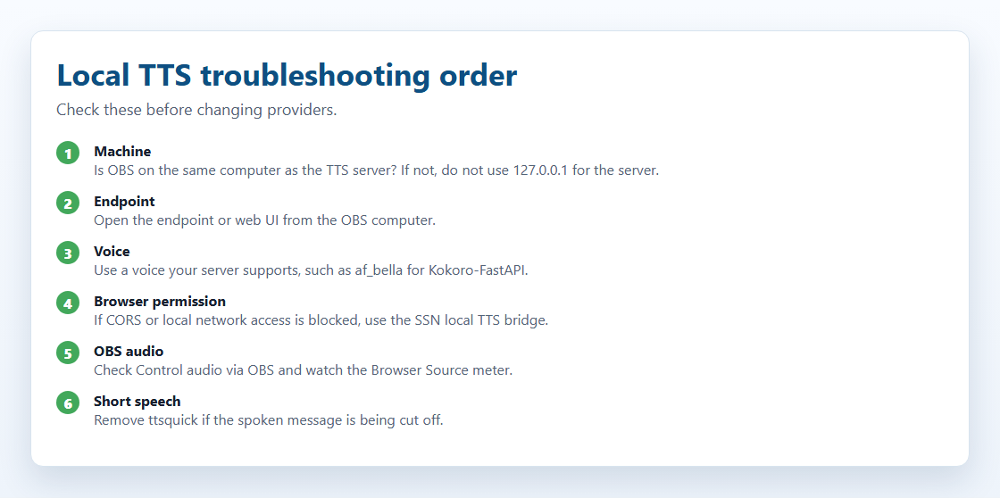

Kas mul on seda vaja?
„Kohalik” tähendab kas SSN-i sisseehitatud häält, mis töötab brauseris, või teie enda käitatavat kõneserverit.
| Ma tahan… | Tehke seda |
|---|---|
| Tasuta hääled, mida pole vaja installida | Kasutage sisseehitatud hääled. Enamikule sellest piisab. |
| Kasutada juba töötavat kõneserverit | Ühendage server. |
| Kloonitud hääl | Vt hääle kloonimine. |
| Fish Audio OBS-is | Vt Fish Audio seadistamine. |
| Tasulised pilvehääled | Vt TTS viide. |
Sisseehitatud hääled (ei ole vaja installida)
Need töötavad SSN-is teie brauseris. Serverit, Dockerit ega API-võtit pole vaja.
| Hääl | Heli | Arvuti koormus | Lingi väärtus |
|---|---|---|---|
| Kokoro | Suurepärane | Keskmine. GPU-ga kiirem. | ttsprovider=kokoro |
| Piper | Väga hea | Väike. Ainult CPU. | ttsprovider=piper |
| Kitten | Hea | Väga väike. Ainult CPU. | ttsprovider=kitten |
| eSpeak-NG | Robotlik | Minimaalne. Ainult CPU. | ttsprovider=espeak |
Seadistage see neljas etapis
- Lisa
&speech=en-US&ttsprovider=kokoroomadock.htmllink. (Võipiper,kitten,espeak.) - Lisage see link OBS-i allikana Brauseri allikas. See on leht, mis teeb häält.
- Selle omadustes lülitage sisse Heli juhtimine OBS-i kaudu.
- Saatke lühike testvestlussõnum, näiteks
Testing local TTS.
dock.html?session=YOUR_SESSION&speech=en-US&ttsprovider=kokoro
Hääled, kiirus ja muud keeled: pakkuja seaded. Kas eelistate klõpsamist? Kasutage seadistusjuhend.
Ühendage oma TTS-server
Server pakub rohkem hääli, häälte kloonimist või üht häält, mida saate eri tööriistades kasutada. SSN suhtleb sellega nagu OpenAI-ga ühilduv kõneserver. API-võtit pole vaja.
- Käivitage oma server. Kokoro-FastAPI on kõige lihtsam.
- Avage SSN-is TTS-i pakkujate loend ja valige Kohandatud / Kohalik TTS-i lõpp-punkt.
- sisse Kohandatud / kohaliku API lõpp-punkt, sisestage oma serveri aadress, näiteks
http://127.0.0.1:8880/v1/audio/speech. - Jätke API võti tühjaks.
- Valige hääl, mida teie server tunneb:
af_bellaKokoro jaoks,novaopenedai-speechi jaoks. - Kopeerige link OBS-i ja saatke testvestlussõnum.

| Server | Mudel | GPU | Ketas | Port |
|---|---|---|---|---|
| Kokoro-FastAPI (soovitatav) | Kokoro 82M | Valikuline | ~2 GB | 8880 |
| openedai-speech (Piper) | Piper | Ainult CPU | <1 GB | 8000 |
| kokoro-web | Kokoro 82M | Valikuline | ~2 GB | 3000 |
Need vajavad Docker Desktop olema installitud ja töötama. See on isiklikuks kasutamiseks tasuta.
localhost-aadressi reegel
See on kõige levinum viga.
localhost ja 127.0.0.1 tähendab alati "sama arvutit". Kui OBS on ühes arvutis ja kõneserver teises, 127.0.0.1 OBS-is viitab OBS-i arvutile.
| Teie seadistus | Kasutage seda aadressi |
|---|---|
| OBS ja server samas arvutis | http://127.0.0.1:8880/v1/audio/speech |
| Server kodus teises arvutis | http://192.168.x.x:8880/v1/audio/speech, selle arvuti kohaliku IP-ga |
| SSN-i rakenduse test töötab, OBS vaikib | OBS vajab aadressi, mis töötab OBS-i arvutist. Rakenduse õnnestunud test ei tõenda, et OBS serverini jõuab. |
Kontrollige ka, kas tulemüür lubab porti ja kas Docker on selle avaldanud (-p 8880:8880).
Kokoro-FastAPI
Kokoro-FastAPI käitab Kokorot kohaliku serverina. Töötab protsessoril; GPU-d pole vaja.
- Avage terminal (käsuviip, PowerShell või terminal) ja käivitage üks järgmistest:
docker run -p 8880:8880 ghcr.io/remsky/kokoro-fastapi-cpu:v0.2.2
NVIDIA GPU (kiirem):
docker run --gpus all -p 8880:8880 ghcr.io/remsky/kokoro-fastapi-gpu:v0.2.0post4
Esimesel käivitamisel laaditakse ühekordselt alla umbes 1,5–2 GB. - Avatud
http://localhost:8880/web/. Peaksite nägema häälte testimise lehte (saadaval 67+). - Kasutage seda linki (muutke aadressi, kui server asub teises arvutis):
dock.html?session=YOUR_SESSION&speech=en-US&ttsprovider=customtts&openaiendpoint=http://127.0.0.1:8880/v1/audio/speech&voiceopenai=af_bella
af_bella, af_sarah, am_adam või bf_emma. OpenAI nimed nagu nova või alloy ei pruugi töötada.Käivitage see automaatselt Dockeriga:
docker run -d --restart unless-stopped -p 8880:8880 ghcr.io/remsky/kokoro-fastapi-cpu:v0.2.2
openedai-speech (Piper ja XTTS-v2)
Valik A: kerge Piper-server (CPU)
Alla 1 GB. Hääli ei klooni.
docker run -d --restart unless-stopped -p 8000:8000 ghcr.io/matatonic/openedai-speech-min
Hääled: alloy, echo, fable, onyx, nova, shimmer.
dock.html?session=YOUR_SESSION&speech=en-US&ttsprovider=openai&openaiendpoint=http://localhost:8000/v1/audio/speech&voiceopenai=nova
Selle käitamine lähtekoodist Windowsis (HTTP 500 vead)
Lisage selle virtuaalkeskkonna Scripts kaust asukohta PATH esmalt. Muidu ei leia see piper.exe või ffmpeg.exe.
cd openedai-speech $env:Path = "$PWD\.venv\Scripts;$env:Path" .\.venv\Scripts\python.exe speech.py --xtts_device none -H 127.0.0.1 -P 8000
Valik B: XTTS-v2 hääle kloonimine (GPU)
Vajab täisserverit, mitte openedai-speech-min. Planeerige umbes 4 GB GPU-mälu. CPU töötab, kuid on aeglane.
Seadistage XTTS-v2 neljas etapis
- Hankige server ja käivitage see:
git clone https://github.com/matatonic/openedai-speech.git cd openedai-speech Copy-Item sample.env speech.env docker compose up -d
Kasutage macOS-is või Linuxiscp sample.env speech.env. Docker vajab GPU-juurdepääsu. Mudel laaditakse alla esimesel kasutamisel. - Tehke puhas näidisklipp häälest, mida teil on luba kasutada. Mono, 22050 Hz, 6–30 sekundit:
ffmpeg -i input.mp3 -ac 1 -ar 22050 -t 6 -y voices/me.wav
- sisse
config/voice_to_speaker.yaml, lisage see olemasoleva allatts-1-hdjaotisesse (säilitage seal juba olevad hääled):tts-1-hd: me: model: xtts speaker: voices/me.wav language: enMuutkemenimele, mille SSN saadab. - Käivitage
docker compose restart, seejärel kasutage:dock.html?session=YOUR_SESSION&speech=en-US&ttsprovider=customtts&openaiendpoint=http://127.0.0.1:8000/v1/audio/speech&openaimodel=tts-1-hd&voiceopenai=me&openaiformat=wav
openaimodel=tts-1-hd on nõutav. Ilma selleta saadab SSN tts-1, ning server kasutab selle asemel Piperit. voiceopenai peab ühtima teie häälenimega YAML-failis.Kas brauser on blokeerinud? Käivitage sild ja muutke ainult openaiendpoint juurde http://127.0.0.1:8124/v1/audio/speech.
Kohalik TTS-sild
Väike SSN-i abitööriist. See võtab vastu SSN-i päringu, edastab selle teie kõneserverile ja tagastab heli brauseritele sobival viisil. Vajab Node.js-i.
http://127.0.0.1:8124/v1/audio/speech, isegi kui kõneserver asub teises arvutis.
- Öelge sillale, kus teie server asub. PowerShell:
$env:SSN_TTS_TARGET="http://127.0.0.1:8880/v1/audio/speech"
Server teises arvutis? Kasutage selle kohalikku IP-d, näitekshttp://192.168.x.x:8880/v1/audio/speech. - SSN-kaustas käivitage
node scripts/local-tts-bridge.cjs. Jätke see tööle. - Suunake SSN sillale:
dock.html?session=YOUR_SESSION&speech=en-US&ttsprovider=customtts&openaiendpoint=http://127.0.0.1:8124/v1/audio/speech&voiceopenai=af_bella
macOS/Linux, ühel real: SSN_TTS_TARGET="http://127.0.0.1:8880/v1/audio/speech" node scripts/local-tts-bridge.cjs. Jaotises local-tts-bridge kaust, node server.cjs teeb sama. Muutke porti kasutades SSN_TTS_BRIDGE_PORT=8125. Kõik valikud: silla README.
GPT-SoVITS režiim
GPT-SoVITS kasutab oma /tts vormingut. Sild teisendab päringud selle jaoks sobivaks.
$env:SSN_TTS_REF_AUDIO_PATH="C:\voices\speaker.wav" $env:SSN_TTS_REF_TEXT="Reference audio transcript here." $env:SSN_TTS_TARGET="http://127.0.0.1:9880/tts" node scripts/local-tts-bridge.cjs --mode gptsovits
dock.html?session=YOUR_SESSION&speech=en-US&ttsprovider=customtts&openaiendpoint=http://127.0.0.1:8124/v1/audio/speech&openaiformat=wav
F5-TTS-serveri režiim
Mõned F5-TTS-i ühilduvuskihid kasutavad /synthesize_speech/?text=...&voice=.... Sild teisendab nende päringud sobivaks.
$env:SSN_TTS_TARGET="http://127.0.0.1:7860/synthesize_speech/" node scripts/local-tts-bridge.cjs --mode f5
dock.html?session=YOUR_SESSION&speech=en-US&ttsprovider=customtts&openaiendpoint=http://127.0.0.1:8124/v1/audio/speech&voiceopenai=default_en&openaiformat=wav
Hääle kloonimine
Kloonimine ei ole SSN-i seade. See on mõne kõneserveri funktsioon. SSN saadab vestlusteksti; server valib kloonitud hääle.
- Salvestage ühe kõneleja puhas, tavaliselt 3–30 sekundi pikkune klipp vähese taustamüraga.
- Mõned serverid vajavad ka klipis öeldud täpseid sõnu.
- Server muudab klipi hääleprofiiliks.
- SSN saadab vestlusteksti koos
ttsprovider=customtts. - Server tagastab heli (tavaliselt WAV või MP3) ja SSN esitab selle.
Kui GPU-mälu on 6 GB või vähem, alustage OpenAI-ga ühilduvate serverite väikeste mudelitega. Suuremad mudelid töötavad ka siis, kui neid majutatakse mujal.
| Valik | Kloonimise lähtematerjal | Kas piisab 6 GB GPU-st? | Kuidas ühendada |
|---|---|---|---|
| XTTS-v2 / openedai-speech | Lühike WAV-klipp | Jah, umbes 4 GB | Otse, /v1/audio/speech. Projekt on arhiveeritud. |
| chatterbox-tts-api / Chatterbox-TTS-Server | Võrdlusklipp | Tõenäoliselt Turboga või väikeste tükkidega | Otse või silla kaudu. GPU-ga töötab sujuvamalt kui CPU-ga. Seadistamine sõltub projekti harust. |
| Qwen3-TTS (0.6B / 1.7B) | 3-sekundiline klipp | Tõenäoliselt (0.6B Base) | Vajab OpenAI-ga ühilduvat liidest. |
| GPT-SoVITS | 5 sekundit; parem 1 minutiga | Tõenäoliselt fp16 / vähendatud paigaldusega | Sild --mode gptsovits. |
| F5-TTS | Klipp ja selle ärakiri | Võib-olla | Ühilduvuskiht ehk sild --mode f5 koos F5-TTS_server. |
| MisoTTS 8B | Näidisheli | Ei; Soovitatav 24 GB | Ainult kaughostimine. Repos pole kohalikku REST-i lõpp-punkti. |
Sisseehitatud Kokoro ja Kokoro-FastAPI ei klooni hääli.
Mida testiti SSN-iga
Kontrollitud mõlemaga dock.html ja featured.html:
- openedai-speech (Piper): tegelik kõnesüntees protsessoril, otse ja silla kaudu.
- Chatterbox-TTS-Server: tegelik kõnesüntees protsessoril, kasutades
Emily.wav, otse ja silla kaudu. - chatterbox-tts-api: päringu vorming testitud, otse ja silla kaudu.
- GPT-SoVITS ja F5-TTS_server: ainult sillarežiimide kaudu.
- F5-TTS-i ametlik projekt ja Qwen3-TTS: vajavad esmalt ühilduvuskihti (saadaval ainult CLI, Gradio või teegina).
Millist arvutit ma vajan?
Ligikaudsed lähtekohad, mitte lubadused. Mälukasutust mõjutavad mudeli suurus, teksti pikkus ja muud rakendused.
| Valik | Minimaalne | Mugav |
|---|---|---|
| Süsteemi TTS / eSpeak | Iga arvuti | Iga arvuti |
| Sisseehitatud Kitten | Nõrgem protsessor, 4 GB muutmälu | Sülearvuti protsessor, 8 GB muutmälu |
| Sisseehitatud Piper | Moodne protsessor, 4–8 GB muutmälu | Moodne protsessor, 8 GB muutmälu |
| Sisseehitatud Kokoro | Moodne protsessor, 8 GB muutmälu | WebGPU GPU või kiire CPU, 8–16 GB muutmälu |
| Kokoro-FastAPI | Protsessor, 8 GB muutmälu | Valikuline NVIDIA GPU, 8–16 GB muutmälu |
| openedai-speech Piper | Protsessor, 4–8 GB muutmälu | Protsessor, 8 GB muutmälu |
| openedai-speech XTTS | NVIDIA GPU ~4 GB, 8–16 GB muutmälu | 6 GB+ NVIDIA GPU, 16 GB muutmälu |
| Chatterbox | Mõne versiooni puhul CPU, aeglane | 6 GB+ NVIDIA GPU, 16 GB muutmälu |
| GPT-SoVITS / F5-TTS / Qwen3-TTS | Protsessor testimiseks, aeglane | 6 GB+ NVIDIA GPU, 16 GB muutmälu |
| MisoTTS 8B | Mitte 6 GB juures | 24 GB GPU või kaugserver |
Viige heli OBS-i
OBS-i brauseriallikas (soovitatav)
Töötab sisseehitatud häälte ja teie enda serveriga.
- Lisage a Brauseri allikas oma
dock.htmlTTS link. - Lülitage sisse Heli juhtimine OBS-i kaudu.
- Klõpsake OK. TTS kuvatakse nüüd OBS-mikseris.
SSN-i töölauarakendus
Töölauarakendus kasutab samu lingiseadeid, kuid heli tuleb rakendusest, mitte OBS-ist. Jäädvustage see, kasutades Töölauaheli või Helisisendi jäädvustamine. TTS-i muudest helidest eraldamiseks suunake rakenduse heli virtuaalkaablisse: heli suunamise juhised.
Rohkem teavet töölauarakenduse kohta
Rakenduseakendes on brauseri juurdepääsupiirangud (CORS) leebemad kui Chrome’is. Brauseripäringutest keelduvate serverite jaoks on sild siiski kõige kindlam valik. Sisseehitatud Kokoro puhul saab rakendus kasutada oma ninjafy.tts teed, selle asemel et mudelit brauserisse laadida.
&speech=en-US ilma teenusepakkujata) sõltub OBS-ile saadaolevatest häältest. Sageli pole neid üldse või ei tekita need jäädvustatavat heli. Kasutage selle asemel mõnda ülaltoodud teenusepakkujat.Kõrvuti
| Valik | Seadistamine | Kvaliteet | Privaatne | Töötab OBS-is | Maksumus |
|---|---|---|---|---|---|
| Sisseehitatud Kokoro | Puudub | 5/5 | Jah | Jah | Tasuta |
| Sisseehitatud Piper | Puudub | 4/5 | Jah | Jah | Tasuta |
| Sisseehitatud Kitten | Puudub | 3/5 | Jah | Jah | Tasuta |
| Sisseehitatud eSpeak | Puudub | 2/5 | Jah | Jah | Tasuta |
| Kokoro-FastAPI | Docker | 5/5 | Jah | Jah | Tasuta |
| openedai-speech | Docker | 4/5 | Jah | Jah | Tasuta |
| ElevenLabs | API võti | 5/5 | Ei | Jah | Tasulised tasemed |
| Süsteem TTS | Puudub | 2/5 | Jah | Vajab heli suunamist | Tasuta |
Probleemide lahendamine

| Probleem | Proovi seda |
|---|---|
| Rakenduse test töötab, OBS vaikib | OBS peab ise serveriga ühenduse saama. Kas server asub teises arvutis? Asendage 127.0.0.1 kohaliku IP-ga. Kontrollige Heli juhtimine OBS-i kaudu. Kas endiselt blokeeritud? Käivitage sild OBS-arvutis. |
| Loetakse ainult esimest tähte või sõnu | Eemalda ttsquick OBS-i lingilt (näiteks &ttsquick=14) ja värskenda. Katsetamise ajal eemaldage ka typewriter= ajastusprobleemide välistamiseks. |
| Server ei reageeri | Kontrollige, et Docker ja konteiner töötaksid. Avage serveriarvutis http://127.0.0.1:8880/web/ (Kokoro-FastAPI või teie serveri port). Avage OBS-arvutist http://SERVER_LAN_IP:8880/web/. Kui see ebaõnnestub, ei saa ka OBS seda kätte. Kontrollige serveri tulemüüri. |
| „Blocked by CORS”, „private network” või „failed fetch” | Brauser blokeeris päringu enne selle serverisse jõudmist. Käivitage node scripts/local-tts-bridge.cjs OBS-arvutis ja kasutage http://127.0.0.1:8124/v1/audio/speech. Veebis majutatud beetadoki leht blokeeritakse tõenäolisemalt; lihtsam on kasutada silda või kohalikku rakenduseakent. |
| Vale hääl või häält ei leitud | Kokoro-FastAPI: af_bella, af_sarah, am_adam, või üks selle veebilehelt. openedai-speech: nova, echo, alloy. Mõned serverid eristavad suur- ja väiketähti. |
| Heli mängib, kuid OBS ei jäädvusta seda | Lülitage sisse Heli juhtimine OBS-i kaudu. Jälgige katse ajal OBS-i mikseri tasemenäidikut. Määrake kindlasti &ttsprovider=; Süsteemi TTS võib vajada töölaua heli või virtuaalset kaablit. |
| Dockeri tõmmist ei leitud | Tõmmiste sildid muutuvad. Vaadake praegust silti siit: Kokoro-FastAPI või openedai-speech. |
Serveriehitajatele
Kuidas SSN suhtleb kohandatud serveriga. Teil on seda vaja ainult siis, kui ehitate või silute seda.
chat text -> SSN -> your endpoint (or the bridge) -> TTS server -> audio -> SSN plays it
Mida SSN saadab
Koos ttsprovider=customtts, localtts või openai, saadab SSN JSON-vormingus POST-päringu:
POST /v1/audio/speech
{
"model": "tts-1",
"input": "Chat message text",
"voice": "af_bella",
"response_format": "mp3",
"speed": 1.0
}
Kui API-võtit pole määratud, ei saada SSN Authorization-päist.
Mida SSN saab taasesitada
| Vastus | Töötab? | Märkmed |
|---|---|---|
| Helifail | Jah | Parim. audio/mpeg, audio/wav, audio/ogg, audio/aac, või mis tahes brauseris esitatav tüüp. |
| JSON heli URL-iga | Jah | Kontrollid url, audio_url, output_url, data.url, ja esimene data[] üksus. |
| Base64 heliga JSON | Jah | Kontrollid audio, audio_data, audioContent, b64_json, pesastatud data väljad ja andmete URL-id. |
| Töötlemata PCM | Ainult ühilduvuskihiga | Saada see WAV-failina või base64 WAV-ina. |
Vormingud: mp3 on väike ja laialdaselt toetatud. wav sobib kloonimisserveritele ja sildade testimiseks. Kasutage opus ainult siis, kui nii server kui ka brauser seda toetavad.
Voogedastust veel ei toetata. SSN ootab kogu vastuse ja esitab selle siis. Hoidke vestlussõnumid lühikesed.
Teie enda serveri lingiseaded
| Seadistamine | Näide | Mida see teeb |
|---|---|---|
ttsprovider | customtts | Kasutage oma serverit. (openai töötab ka.) |
openaiendpoint | http://localhost:8880/v1/audio/speech | Teie serveri aadress. Muutke porti sobivaks. |
speech | en-US | Lülitab inglise keeles TTS-i sisse. |
voiceopenai | af_bella | Häälnimi. Oleneb serverist. |
openaimodel | tts-1-hd | Mudeli nimi. Vaikimisi tts-1. |
openaiformat | mp3 | mp3, wav, opus või flac. |
openaispeed | 1.0 | Kõnekiirus (0,5–2,0). |
Samuti aktsepteeritud: customttsendpoint, localttsendpoint, customttsvoice, localttsvoice, customttsmodel, localttsmodel, customttsformat, localttsformat. Ettelugemisvalikud, näiteks simpletts, skipmessages ja ttsquick töötavad kõigi teenusepakkujatega: kõik lingi seaded.
Näidislingid:
Kokoro-FastAPI: dock.html?session=YOUR_SESSION&speech=en-US&ttsprovider=customtts&openaiendpoint=http://localhost:8880/v1/audio/speech&voiceopenai=af_bella&openaispeed=1.1 openedai-speech: dock.html?session=YOUR_SESSION&speech=en-US&ttsprovider=customtts&openaiendpoint=http://localhost:8000/v1/audio/speech&voiceopenai=nova kokoro-web: dock.html?session=YOUR_SESSION&speech=en-US&ttsprovider=customtts&openaiendpoint=http://localhost:3000/api/v1/audio/speech&voiceopenai=af_bella